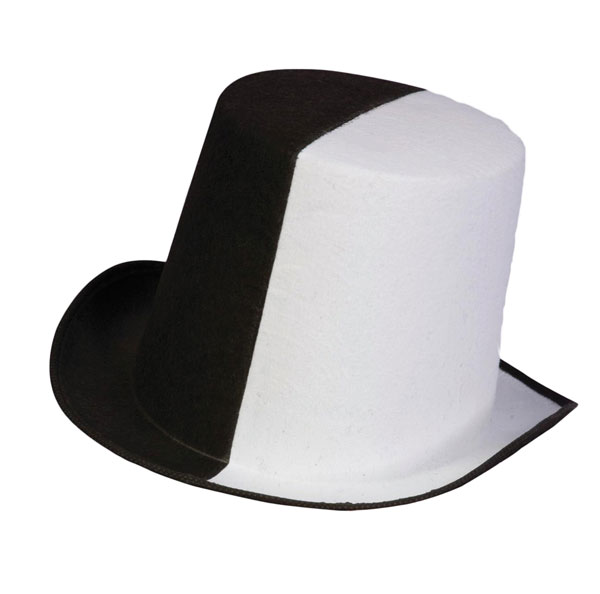
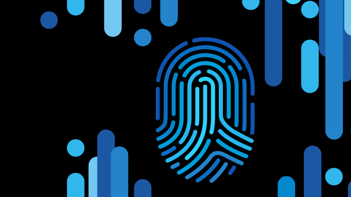

.jpg)
Recognizing the Danger
A big misconception between the average computer user and the experienced ones, are being able to recognize the threat. Add, insecure webpages, and untrusted links can easily lead to the loss of your personal information easily
Seeing the Colors
Hackers can be identified, for the ones you meet, by the type of "color" they refer to themselves with. Black hat hackers are the malicious variety, only worried about serving their self or a higher person looking for your info at top dollar. White hats are the kind who prevent the hacking of other PCs by increasing a sites security by hacking them their self. Grey hats tend to live in the middle, and are usually do the jobs of white hats without the need for pay, just to prove it to themselves instead. Leaking info along the way.
Different Types of Threats
The range of access to a computer can vary immensely. There are viruses that can be remotely installed into your computer, such as malware, ransomware, or spyware. Some Spyware can even com preinstalled. There are also certain cookies that take your information every time you access a site, and you can agree to it without even knowing.
